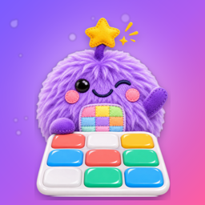

Kuchupie Support
Cute, colorful Sudoku with PipNeed help or have an idea? Email vasajitha@gmail.com and we'll get back to you.
How do I play?
Fill the grid so every row, column and 3×3 box has the numbers 1 to 9 exactly once. You can replay the tutorial anytime in Me → Settings → How to play.
What are hearts?
Each puzzle gives you 3 hearts. A wrong number costs one. Out of hearts? Refill one with gems or restart the puzzle.
How do I get gems?
Solve puzzles (more stars mean more gems), finish the Daily Challenge, and level up. Spend gems on hints, heart refills, Streak Freezes, Pip colors and board themes.
I left a puzzle halfway. Is it lost?
No. Kuchupie saves your progress automatically. Look for Continue on the map or the Daily tab.
Reminders aren't showing up
Turn on Me → Settings → Daily reminder, then check iPhone Settings → Apps → Kuchupie → Notifications and make sure Allow Notifications is on.
Can I start over?
Yes: Me → Reset all progress. This can't be undone.
Kuchupie is made by Zerowing · Privacy Policy